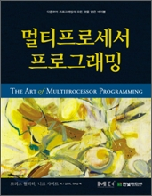
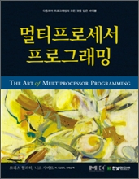

멀티프로세서 프로그래밍
11/15/2009
예전 회사에서 JavaOne 에 갈 기회가 있었다. 여러 session 들을 들었지만, 내게 가장 Impact 있었던 것이 Intel 에서 온 사람이 발표한 (중국계 같았다) STM/HTM 관련 session 이었다. 그때는 분명히 흥미롭다고 생각하고 찾아봐야지 생각했는데, 그 후 일상에 쫓겨 망각의 강 너머로 밀려가 버렸다.
한달 전 즈음에 이 책 어떤가요? 란 질문이 내가 자주 가는 사이트의 포럼에 올라왔다.
일단 평소 관심이 있던 주제라서 목차를 훑어 보니 마지막 장에 TM (Transaction Memory) 가 있어서 "더헛" 이라는 감탄사와 함께 바로 질렀다.

학교를 다닐 때 친구가 한 말이 있다.
우리 학교가 왜 좋은 학교인가 - 그건 "저자 직강" 이 많기 때문이다.
이 책의 저자 (모리스 헐리히, 니르 샤비트) 들에 대해 잘 몰랐지만, 챕터의 끝 마다 있는 "일러두기"를 볼 때 마다 이 사람들이 책에서 설명하고 있는 바로 이 알고리즘을 발견한 사람들이구나 하는 감탄을 반복하게 된다.
일단 평소 관심이 있던 주제라서 목차를 훑어 보니 마지막 장에 TM (Transaction Memory) 가 있어서 "더헛" 이라는 감탄사와 함께 바로 질렀다.

학교를 다닐 때 친구가 한 말이 있다.
우리 학교가 왜 좋은 학교인가 - 그건 "저자 직강" 이 많기 때문이다.
이 책의 저자 (모리스 헐리히, 니르 샤비트) 들에 대해 잘 몰랐지만, 챕터의 끝 마다 있는 "일러두기"를 볼 때 마다 이 사람들이 책에서 설명하고 있는 바로 이 알고리즘을 발견한 사람들이구나 하는 감탄을 반복하게 된다.
물론 이 책에서 이야기 하는 선형화 가능 시점을 찾아내어 증명하고, 무잠금 알고리즘을 적용하는 것이 산업 현장에서 바로 적용하는 건 쉽지 않다. 왜냐면 이러한 무잠금 알고리즘은
복잡한 타이밍 기반 기술
로 생각되기 쉽다.
하지만, 이미 해당 이론을 적용한 결과 (java.util.concurrent.*) 들이 널리 쓰이고 있으니, 더이상 실용성 없는 이론가들의 이상세계에 대한 넋두리라고 치부할 일은 아니다.
그동안 Middleware 를 만드는 일을 해 왔으면서도 바쁘다는 핑게로 기반 이론에 대한 이해와 발전 상황에 대해 지나치게 피동적이고 방어적으로 행동하지 않았는가 라는 반성을 하게 된다.
- 닥치고 synchronize 인 Coarse-grained 잠금 보다 이해하기 어려워 적용하기 쉽지 않고
- 따라서 향후 유지보수가 쉽지 않으며
- 환경 ( H/W support 여부, Application algorithm, 경쟁상황의 빈도) 에 따라 그 결과치가 매우 다를 수 있으므로
복잡한 타이밍 기반 기술
로 생각되기 쉽다.
하지만, 이미 해당 이론을 적용한 결과 (java.util.concurrent.*) 들이 널리 쓰이고 있으니, 더이상 실용성 없는 이론가들의 이상세계에 대한 넋두리라고 치부할 일은 아니다.
그동안 Middleware 를 만드는 일을 해 왔으면서도 바쁘다는 핑게로 기반 이론에 대한 이해와 발전 상황에 대해 지나치게 피동적이고 방어적으로 행동하지 않았는가 라는 반성을 하게 된다.
자 이제 번역서의 질에 대해 듣기싫은 이야기를 좀 해야 되겠다.
일단 지금까지 읽은 부분에 대해 리스트업을 좀 하면
일단 지금까지 읽은 부분에 대해 리스트업을 좀 하면
- p53 무기아 상태와 무교착 상태에 대해 거꾸로 설명한다.
- p54 오기가 있다. j = 1-i
- p78 최대 n-1 개의 DOWN 과 DOWN <- RIGHT 의 오기
- p249 클래스는 모니터가 클래스가 <- 중복
- p288 각 노드에 Boolean 인 marked 필드를 추가하려 (추가하여 의 오기)
- p298 만약 currA 의 키가 a 의 키와 갔다면 (어딜 가?)
- p342 EliminationArray 를 사용하여 Stack 를 만들었는데 전체적으로 선형화 되지는 않으므로 (push/pop 이 성공한 경우와 실패한 경우 선형화 시점이 다르다) 선입 선출이 깨진 것이 아닌지. 그렇다면 이걸 Stack 이라고 부를 수 있을까?
- p354 그림 12.6 결합 전단계 는 12.3 의 오기인듯
- p369 Balancer.traverse() 는 인자가 없다고 해 놓고선 public synchronized int traverse(t) -> 응?
- p367 입력 수열이 계단 속성을 지닌다. - 수열의 계단 속성에 대해서는 설명한 바 없음 -> 원서에도 이모양일까?
- p369 half[] 는 width 의 반인 Merger 객체의 2차원 배열이다 -> element 가 2개인 1차원 배열이던데?
- p409 크기를 변강?하는 중에는
- p415 비트를 뒤집다 -> 일반적으로 1->0, 0->1 로 하는 걸 비트를 뒤집다 라고 표현하지 않는가?
- p438 이런 종류의 성능을 무작위화 없이 만들어낼 방법을 -> 은 의 오기?
헥헥.
아... 너무 읽기 힘들어요...
2판에는 신경 좀 써 주세요.
아... 너무 읽기 힘들어요...
2판에는 신경 좀 써 주세요.